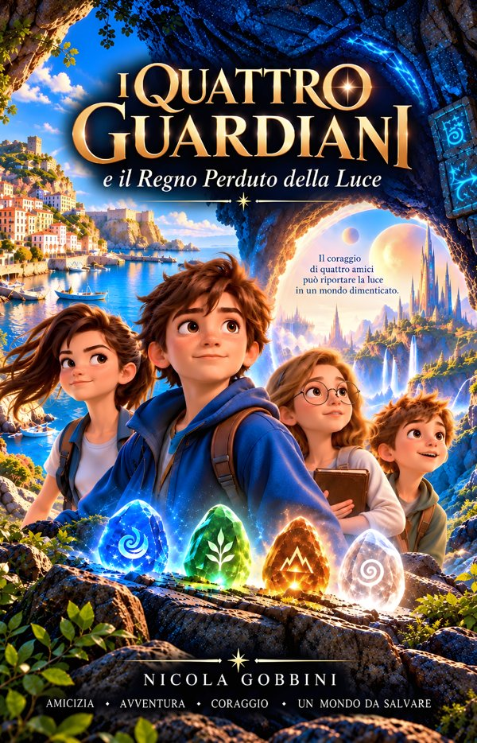
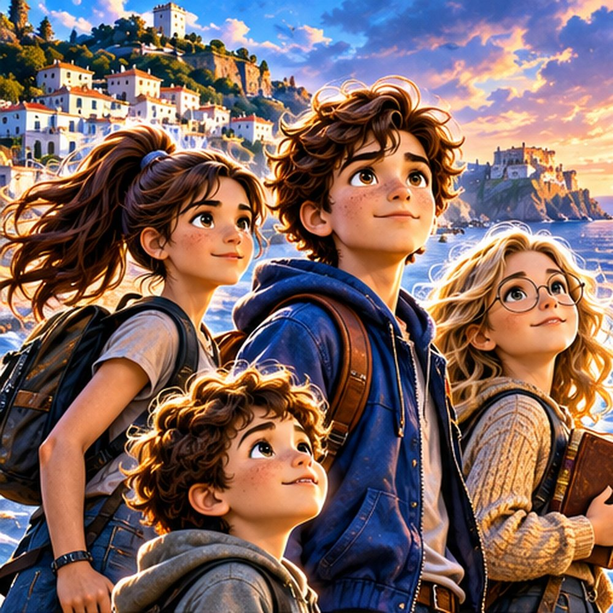
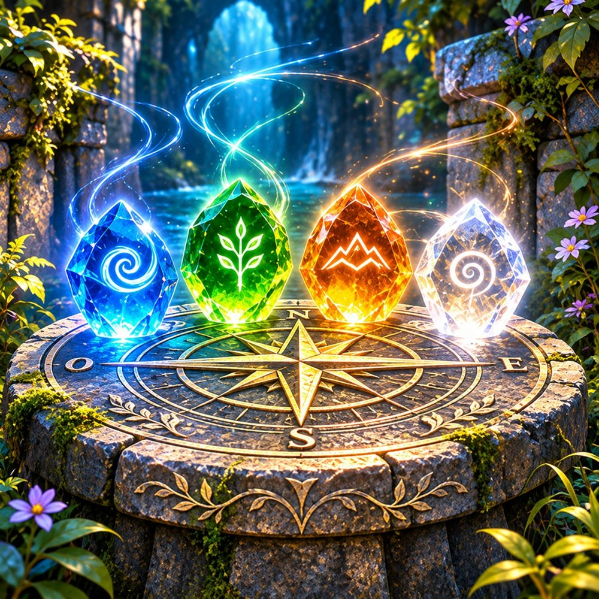
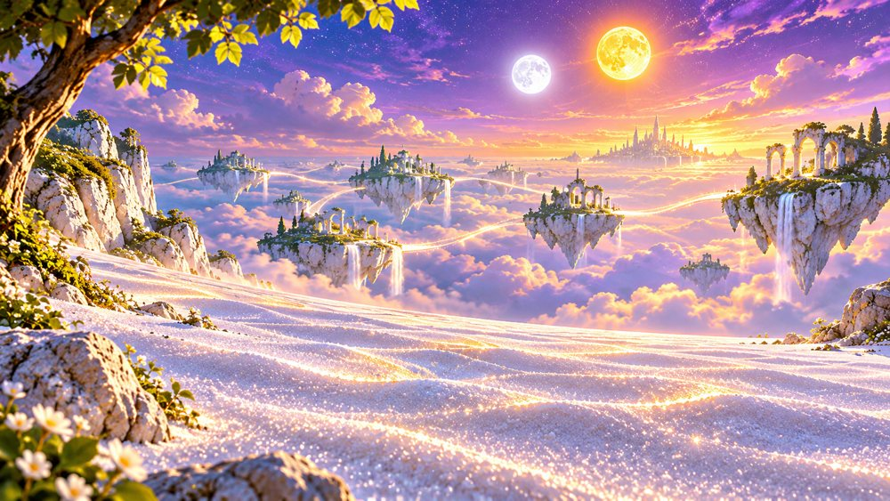

e il regno perduto della Luce
Nicola Gobbini · romanzo fantasy per ragazzi dai 9 ai 12 anni
A Marechiaro, un paese di pescatori, è agosto e il mare brilla così forte che bisogna guardarlo con gli occhi socchiusi. Marco, Sophia, Giulia e Luca sono amici da sempre. Un giorno prendono la barca a remi e vanno fino alla Grotta dei Sussurri, che si vede solo arrivando dal mare.
Dentro trovano rune che si accendono di azzurro, un lago di cristallo e quattro pietre, ognuna di un colore diverso. Le pietre li riconoscono. Oltre un arco di luce li aspetta Luminos, un regno dove il cielo sta al posto del mare, la spiaggia è fatta di sale luminoso e la luce sta svanendo.
È una storia di amicizia, di coraggio e di talenti che ognuno ha già dentro di sé, scritta con un linguaggio semplice e ricco di immagini del mare.
Per cominciare: il primo capitolo si legge gratis online, anche in classe sulla LIM: blunikoblu.github.io/iquattroguardiani/estratto.html. Le attività di questo kit riguardano i capitoli 1–5.

Ha dodici anni e porta sempre la giacca blu di suo padre, troppo grande. Sa leggere il mare: sente da che parte gira la corrente.
Corre sempre, con la coda alta di capelli scuri, e tiene il conto delle gare vinte. È la più coraggiosa, a volte troppo.
Ha gli occhiali e una borsa a tracolla piena di quaderni. Legge i libri del nonno e copia tutto quello che vede.
È il più piccolo, nove anni, con le tasche piene di sassi e conchiglie. Sente gli animali, a cominciare dai delfini.

Ogni attività indica i capitoli di riferimento, la durata indicativa e le materie coinvolte. Si possono usare anche separatamente.
Dopo la lettura del primo capitolo, la classe disegna la mappa del paese: il molo dove Tonino rammenda le reti, la Secca da cui bisogna girare al largo, le scogliere, la Grotta dei Sussurri. Ogni luogo va giustificato con una frase del testo.
Obiettivo: leggere con attenzione i dettagli e trasformare una descrizione in uno spazio.
Giulia copia i simboli della grotta e riconosce le rune dei libri del nonno. Gli alunni, a coppie, inventano un alfabeto segreto di simboli e scrivono un messaggio. Le coppie si scambiano i messaggi e provano a decifrarli.
Aggancio: le scritture antiche (rune, geroglifici, alfabeti dei popoli del mare).
Se dalla Grotta dei Sussurri uscisse una quinta pietra per te, di che colore sarebbe e quale dono avrebbe? Ogni alunno disegna la sua pietra e scrive un breve testo: «Il mio dono è… lo uso per…». Il dono deve partire da qualcosa che sa già fare davvero.
Obiettivo: riconoscere i propri talenti e quelli dei compagni.
Quando arrivano a Luminos, Marco nota prima di tutto l'aria che sa di sale; il sale brilla e scricchiola sotto le scarpe. Gli alunni descrivono un luogo inventato usando tutti e cinque i sensi, almeno una frase per senso, e poi lo leggono ad alta voce senza dire il nome: la classe lo disegna.
Le raccoglitrici di sale cantano mentre lavorano, e la canzone parla di un tempo in cui pescatori e raccoglitori erano un solo popolo. La classe raccoglie canti di lavoro o modi di dire del proprio territorio, chiedendo a nonni e famiglie, poi scrive insieme una strofa nuova per un canto del proprio paese.
A Luminos il sale brilla di luce propria; nel nostro mondo forma cristalli. Si scioglie sale da cucina in acqua calda fino a saturazione, si appende un filo di cotone in un barattolo e si osserva per alcuni giorni la crescita dei cristalli, annotando ogni volta che cosa cambia, come farebbe Giulia sul suo taccuino. L'acqua calda la prepara l'insegnante.
Aggancio: le saline, l'evaporazione, le maree.

Kit gratuito, liberamente stampabile e fotocopiabile per uso didattico. © 2026 Nicola Gobbini. Le illustrazioni sono state create con l'intelligenza artificiale.